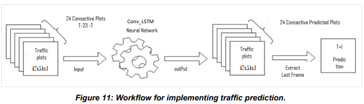
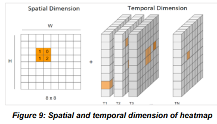
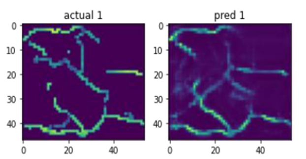

URBAN TRAFFIC FLOW PREDICTION, A SPATIAL-TEMPORAL APPROACH
Supervisors: Prof. Dr. Pebesma Edzer, Ph.D., Prof. Dr. Silva, Joel Dinis Baptista Ferreira, Ph.D., Dr. Mateu Mahiques, Jorge.
Current advances in computational technologies such as machine learning combined with traffic data availability are inspiring the development and growth of intelligent transport Systems (ITS). As urban authorities strive for efficient traffic systems, traffic forecasting is a vital element for effective control and management of traffic networks. Traffic forecasting methods have progressed from traditional statistical techniques to optimized data driven methods eulogised with artificial intelligence. Today, most techniques in traffic forecasting are mainly timeseries methods that ignore the spatial impact of traffic networks in traffic flow modelling. The consideration of both spatial and temporal dimensions in traffic forecasting efforts is key to achieving inclusive traffic forecasts. This research paper presents approaches to analyse spatial temporal patterns existing in networks and goes on to use a machine learning model that integrates both spatial and temporal dependency in traffic flow prediction. The application of the model to a traffic dataset for the city of Singapore shows that we can accurately predict traffic flow up to 15 minutes in advance and also accuracy results obtained outperform other classical traffic prediction methods.
Workflow for Implementing the traffic prediction
A Convolutional Long Short-Term Memory (ConvLSTM) Machine learning model was implemented. ConvLSTM is a type of neural network that combines the Convolutional Neural Network (CNN) and the Long Short-Term Memory (LSTM) model.
Reference Image
Model Output
Traffic data was transformed into space time images where the average traffic speed values are characterized by gradation colors showing the spatial intensity of the values for each 15-minute timestep of every day.
Heatmaps were generated to represent the spatial dimension and temporal dimension of the traffic data for each day. The spatial dimension is in this case a graph depicting the spatial intensity of the average speed values using the same
color-scale type to represent the hierarchy of the traffic data. The temporal dimension represents the timestep for which each is plot is generated.
If you're curious about this study, please view the full documentation of the publication by following
this Link. Once you are on the page, you can scroll down to see the option to view or download the paper.
Follow here to view all the codes and scripts for this project.